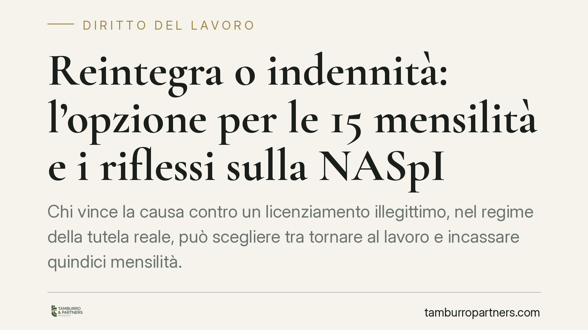

Reintegra o indennità: l'opzione per le 15 mensilità e i riflessi sulla NASpI
Chi vince la causa contro un licenziamento illegittimo, nel regime della tutela reale, può scegliere tra tornare al lavoro e incassare quindici mensilità. Ma questa opzione può incidere sul diritto alla NASpI, perché mette in discussione il carattere involontario della disoccupazione. Un tema che richiede prudenza e verifica caso per caso.

Il caso e il perimetro applicativo
Quando un giudice dichiara illegittimo un licenziamento e ordina la reintegrazione, il lavoratore può trovarsi davanti a un bivio: rientrare in azienda oppure chiudere il rapporto ottenendo un'indennità sostitutiva.
La questione riguarda un regime ben preciso. L'indennità sostitutiva della reintegra pari a quindici mensilità appartiene alla tutela cosiddetta reale, disciplinata dall'art. 18, comma 3, della L. 300/1970 (Statuto dei lavoratori). Questo regime si applica ai licenziamenti dei lavoratori assunti prima del 7 marzo 2015 e alle imprese che superano le soglie dimensionali richieste.
Per i lavoratori assunti a partire da quella data si applica invece il contratto a tutele crescenti disciplinato dal D.Lgs. 23/2015, che prevede meccanismi indennitari differenti. La distinzione è dirimente: prima di ragionare sulle quindici mensilità occorre verificare quale disciplina governa il singolo rapporto.
Perché entra in gioco la NASpI
La NASpI è l'indennità di disoccupazione erogata dall'INPS. Il suo presupposto essenziale è lo stato di disoccupazione involontario, richiesto dall'art. 3 del D.Lgs. 22/2015: il lavoratore deve aver perso il posto per una causa a lui non imputabile.
Qui sta il nodo. Quando il giudice ordina la reintegra, il rapporto di lavoro giuridicamente si ricostituisce. Se il lavoratore, potendo tornare in servizio, sceglie invece l'indennità sostitutiva, la cessazione del rapporto deriva da una sua determinazione volontaria.
Secondo un orientamento che valorizza questo ragionamento, l'opzione per le quindici mensilità potrebbe far venir meno il carattere involontario della disoccupazione. La conseguenza sarebbe la cessazione del diritto alla NASpI a partire dal momento della scelta. Si tratta di una lettura sostenibile sul piano sistematico, ma non può essere presentata come un principio pacifico e definitivamente consolidato: la materia resta soggetta a interpretazione e va monitorata alla luce degli sviluppi giurisprudenziali. In ogni giudizio occorre verificare gli estremi esatti delle pronunce invocate, senza affidarsi a massime non riscontrate.
Implicazioni pratiche
Per il lavoratore che ha ottenuto la reintegra la posta in gioco si articola su tre elementi.
Il momento della scelta. L'esercizio dell'opzione per l'indennità sostitutiva segna, secondo la lettura più rigorosa, lo spartiacque: da lì in avanti la disoccupazione rischia di non essere più qualificabile come involontaria.
La durata residua della prestazione. L'eventuale interruzione della NASpI riguarda i ratei ancora da percepire. I ratei già maturati e incassati fino a quel momento, quando la disoccupazione era pienamente involontaria, restano in linea di principio acquisiti.
La posizione dell'INPS. L'Istituto potrebbe richiedere la restituzione delle somme percepite dopo la data dell'opzione, sul presupposto dell'indebito previdenziale. Si tratta di un'eventualità plausibile ma non automatica, che va valutata in concreto anche in relazione alla buona fede del percipiente e ai tempi di comunicazione della scelta.
L'aspetto economico va quindi ponderato con attenzione: le quindici mensilità sono un valore certo e immediato, ma vanno confrontate con l'eventuale perdita dei ratei NASpI residui e con il rischio di richieste di restituzione.
Cosa fare in concreto
- Verificate quale regime si applica. Accertate se il vostro licenziamento ricade nella tutela reale (art. 18 St. lav.) o nel regime a tutele crescenti (D.Lgs. 23/2015): la disciplina e le opzioni cambiano radicalmente.
- Fate i conti prima di optare. Prima di scegliere le quindici mensilità, quantificate i ratei NASpI residui che rischiate di perdere e valutate l'importo netto complessivo delle due alternative.
- Coordinate la scelta con l'INPS. Comunicate tempestivamente ogni variazione della vostra situazione occupazionale, per ridurre il rischio di richieste di restituzione e per gestire correttamente la buona fede.
- Documentate tempi e modalità. Conservate la data esatta dell'esercizio dell'opzione e ogni comunicazione con azienda ed ente previdenziale: sono elementi decisivi in caso di contestazione.
- Consultate un professionista prima di decidere. Consigliamo di sottoporre il caso a una valutazione specifica prima di formalizzare la scelta: l'opzione è, di norma, irrevocabile.
---
*Contributo informativo a cura di Tamburro & Partners - Avv. Giuseppe Tamburro. Non costituisce parere legale.*
Ogni storia di lavoro ha i suoi tempi.
Se gestisci HR e vuoi un confronto su contenzioso, ispezioni o licenziamenti, scrivi allo studio. Ti rispondiamo entro un giorno lavorativo.